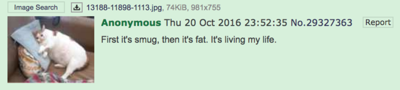

Crying Cat meme
About Crying Cat(AKA Schmuserkadser), this meme is about photoshopping cats with a sad face with teary and glassy eyes.exmaples of the meme


Origin
It was first seen on June 11th, 2014 publilshed by an anonymous meme generator user. It is a photoshopped image of the serious cat meme.
How it started spreading
during 2014 it would be posted again by the user YoussefArafa88
The image appeared on the german image board pr0gramm on April 9th 2015, on that image board it would earn the name Schmuserkadeser in the next 3 years, the image gained over 975 points.
in the follower year, a user on 4chan submitted a picture of a bigger cat with the same sad expression saying "First it's smug, then it's fat. It's living my life".

afterwards the image of the sad cat would be shared all over the internet on reddit, facebook, instagram, and etc.